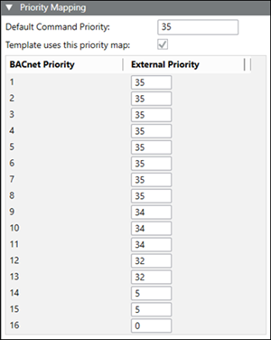

Priority Mapping
The Priority Mapping feature allows you to map BACnet priorities to other subsystem priorities.
Command Priority
Some objects in your building control system use specialized command priorities to determine whether an operator or a particular control program is in control. The Present Values of six object types in your building control system are based on a command priority and established in a hierarchy that ranks from highest (1 – Manual Life Safety) to lowest (16 – Available). The six object types are Analog Output, Analog Value, Binary Output, Binary Value, Multi-State Output, and Multi-State Value. The hierarchy helps determine which source has priority over another to change the value of an object. To command one of these object types, you—or an application—must have a command priority equal to or greater than the current command priority of the object.
Command Priority Array
A Command Priority Array displays commands that have been issued at various priority levels (for example, 8 = Manual Operator). Users and applications can set or relinquish (release) commands for a commandable object. If the Present Value of an object has a Command Priority Array, the appropriate priority level is commanded or relinquished when a command is executed. If the Present Value of an object does not have a Command Priority Array, the system overwrites the present value with the newly commanded value. You can command or relinquish any priority level that you have access to, based on your user privileges.
Command Priority Map
Each subsystem priority array will differ. Each likely has commands mapped to a number—and those numbers need to be mapped to the BACnet priorities.
The following image shows how a Command Priority Map might look for a subsystem. In the example, external priority 35 equals OPER (BACnet Priority 8), 34 equals SMOKE, 32 equals EMER, and so on.

Default Command Priority field
This editable field uses a default command priority to provide a priority value when there is no priority array and the selected command expects a priority.
Template uses this priority map check box
If this check box is not selected, the library mapping template uses the default command priority value.
If this check box is selected, the library mapping template uses the priority map from the following location in the Management View:
Project > System Settings > Libraries > L1-Headquarter > BA > Device > APOGEE_P2_BACnet_Server